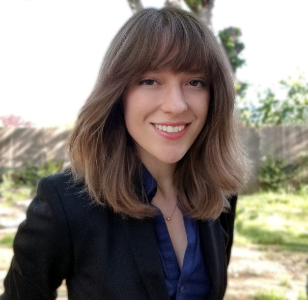

about
Passionate about technology. Digital forensics expertise focused on research, investigation, eDiscovery, and data recovery.

education
University of Central Florida, Orlando FL 32816 Masters in Digital Forensics - graduated: May 2017
Bachelor of English - Technical Communication, minor in Information Technology – graduated: May 2015
Seminole State College, Lake Mary FL 32773Associate of Arts Degree – graduated: December 2012
awards & certs
AccessData Certified Examiner (ACEv6), December 2017 - December 2021
CompTIA Secure Infrastructure Specialist, IT Operations Specialist
- CompTIA A+ ce, November 2016
- CompTIA Network+ ce, November 2017
- CompTIA Security+ ce, May 2018
Cellebrite Certified Mobile Examiner
- Cellebrite Certified Operator (CCO), September 2019 - October 2023
- Cellebrite Certified Physical Analyst (CCPA), September 2019 - October 2023
- Cellebrite Certified Mobile Examiner (CCME), November 2019 - October 2023
Stuart Omans Award for Excellence in Technical Communication, April 2015
Melissa Pellegrin Memorial Scholarship Recipient, March 2015
Amy's Hallmark #935 Fourth Quarter Brand Champion, 2013
work
ArcherHallsenior digital forensic examiner, December 2020 – present
digital forensic examiner, November 2017 – December 2020
- provide digital forensics and e-discovery services to clients
- perform advanced analysis and validation of evidentiary data
- research new technology, security, and legal issues
ActivEngage, Inctechnical writer, September 2016 – October 2017
- analyzed proposed features and business impact
- developed software and process documentation
University of Central FloridaUCF CS&T network services intern, Summer 2016
- configured switches, controllers, and wireless access points on site and through remote management
- responded to networking hardware and performance issues
- ran predictive site surveys for new campus locations
Server Tech Solutionsweb content strategist, December 2015 – May 2016
- audited existing social and paid marketing resources
- updated product, SEO, and e-commerce design strategy
- monitored web analytics and campaign performance
Sonobi, IncQA assistant, June 2015 – October 2015
marketing specialist, June 2014 – October 2015
- generated sales leads and built client relationships
- supported ad operations and web development teams
- executed press releases, events, social media, branding, and product messaging
Amy's HallmarkDecember 2012 – October 2017